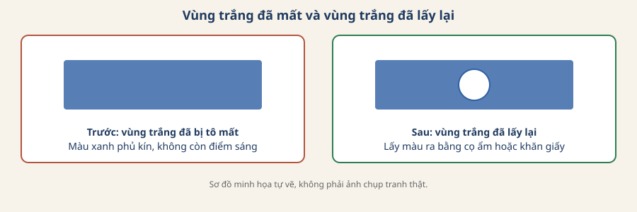

Chữa vùng trắng đã mất: lấy lại điểm sáng khi lỡ tô mất
Bạn đã học ở bài "Vẽ trên giấy khô (wet-on-dry)" rằng màu nước không có màu trắng để tô lên sau: bạn muốn có điểm sáng, bạn phải chừa trắng từ đầu. Nhưng người mới nào cũng có lúc lỡ tô mất vùng trắng: bạn tô nền trời và quên chừa chỗ cho mặt trăng, bạn tô cánh hoa và quên chừa mép sáng, bạn tô lá và quên chừa gân lá. Bài này dạy bạn 5 cách lấy lại vùng trắng đã mất, từ nhẹ đến mạnh, và cách phòng tránh để lần sau không phải sửa. Bài này dùng đúng bộ đồ tối thiểu ở bài bộ đồ: giấy 300 gsm cold press, cọ tròn cỡ 8 và cỡ 4, hộp pan 12 màu, cộng thêm khăn giấy và một lưỡi dao cạo sạch nếu bạn có.

Sơ đồ minh họa tự vẽ — không phải ảnh chụp. Khung trái: vùng trắng đã bị tô mất. Khung phải: vùng trắng đã lấy lại sau khi sửa.
Vì sao vùng trắng quan trọng, và vì sao nó khó lấy lại
Vùng trắng trong tranh màu nước không phải là màu trắng bạn tô lên, mà là giấy trắng lộ ra. Watercolor Affair viết rằng độ trong của màu nước đến từ việc ánh sáng đi qua lớp màu, phản chiếu lên giấy trắng bên dưới rồi quay lại mắt người xem, và vùng trắng là nơi ánh sáng phản chiếu mạnh nhất. Bạn mất vùng trắng, bạn mất điểm sáng nhất trong bức tranh, và bức tranh trông tối và nặng hơn.
Vùng trắng khó lấy lại vì sắc tố màu nước thấm vào sợi giấy. Bạn tô màu lên giấy, sắc tố nằm trong sợi giấy, và bạn không thể tẩy sạch hoàn toàn như tẩy bút chì. Bạn chỉ có thể lấy ra một phần màu, hoặc che màu lại bằng một màu trắng khác. Mỗi cách sửa trong bài này đều có giới hạn: bạn lấy lại được vùng trắng sáng hơn, nhưng hiếm khi trắng hoàn toàn như giấy chưa tô. Bạn biết giới hạn này trước khi sửa, để bạn không thất vọng và không sửa quá tay làm hỏng giấy.
Bạn cũng cần biết một điều: màu bám màu (staining) khó lấy ra hơn màu không bám màu. Bạn đã học ở bài "Chồng lớp trong suốt (glazing)" rằng màu bám màu như Phthalo Blue và Quinacridone Rose nằm yên sau khi khô và không tan ra khi tô lớp khác lên. Cũng vì vậy, màu bám màu khó lấy ra khỏi giấy hơn. Bạn lỡ tô vùng trắng bằng màu bám màu, bạn sẽ lấy lại được ít hơn so với màu không bám màu. Bạn kiểm tra mã sắc tố trên nhãn màu để biết màu bạn dùng có bám màu không, và bạn đừng ngạc nhiên khi màu bám màu lấy ra khó hơn.
Cách 1: lấy màu ra khi màu còn ướt — dễ nhất, hiệu quả nhất
Cách dễ nhất để lấy lại vùng trắng là lấy màu ra ngay khi màu còn ướt, trước khi nó khô và thấm sâu vào giấy. Watercolor Affair hướng dẫn rằng bạn có thể lấy màu ra khỏi vùng còn ướt bằng cọ sạch ẩm, khăn giấy hoặc bọt biển.
Bước 1: rửa cọ thật sạch. Bạn rửa cọ tròn cỡ 4 trong lọ nước sạch, ngoáy cho hết màu trong lông cọ. Bạn chạm cọ lên khăn giấy cho cọ chỉ còn ẩm, không ướt nhỏ giọt.
Bước 2: chạm cọ vào vùng cần lấy trắng. Bạn chạm đầu cọ ẩm lên vùng màu còn ướt, nhẹ nhàng, không chà. Màu sẽ thấm vào cọ. Bạn rửa cọ lại, chạm lên khăn giấy, rồi chạm lại vào vùng đó. Bạn lặp lại vài lần, mỗi lần lấy ra một chút màu.
Bước 3: dùng khăn giấy để lấy màu diện rộng. Bạn gấp khăn giấy thành một góc nhọn, chạm góc khăn vào vùng cần lấy trắng. Khăn giấy hút màu ra khỏi giấy nhanh hơn cọ. Bạn dùng khăn giấy khi vùng cần lấy trắng lớn hơn đầu cọ, ví dụ một mảng bầu trời hay một cánh hoa.
Bạn làm cách này ngay khi bạn phát hiện mình tô mất vùng trắng, trong vòng vài phút sau khi tô. Bạn càng làm sớm, màu càng dễ lấy ra. Bạn đừng đợi màu khô rồi mới sửa, vì khi đó bạn phải dùng cách mạnh hơn ở dưới đây.
Cách 2: làm ướt lại rồi lấy màu ra khi màu đã khô
Màu đã khô vẫn lấy ra được, nhưng khó hơn. ArtTools hướng dẫn rằng bạn có thể làm ướt lại vùng màu đã khô, đợi một chút cho màu mềm ra, rồi lấy màu ra bằng cọ sạch ẩm hoặc khăn giấy.
Bước 1: làm ướt vùng cần sửa. Bạn dùng cọ tròn cỡ 8 nạp nước sạch, tô nước lên vùng màu đã khô mà bạn muốn lấy trắng. Bạn tô nước nhẹ nhàng, không chà, chỉ làm ướt bề mặt. Bạn đợi khoảng 30 giây cho nước thấm vào lớp màu và làm mềm sắc tố.
Bước 2: lấy màu ra. Bạn rửa cọ, chạm lên khăn giấy cho cọ chỉ còn ẩm, rồi chạm đầu cọ lên vùng đã làm ướt. Màu mềm ra sẽ thấm vào cọ. Bạn rửa cọ lại và lặp lại. Bạn cũng có thể dùng khăn giấy gấp góc nhọn để hút màu ra nhanh hơn.
Bước 3: lặp lại nếu cần, nhưng không quá 3 lần. Bạn lặp lại bước 1 và 2 tối đa 2 đến 3 lần. Bạn làm nhiều hơn, giấy sẽ bị xù lông và bề mặt giấy bị hỏng, màu sẽ loang không đều và vùng sửa sẽ nhìn thấy rõ. Bạn dừng lại khi vùng đó đã sáng hơn đủ để làm điểm sáng, dù chưa trắng hoàn toàn.
Cách này hiệu quả nhất với màu không bám màu và giấy cotton, vì giấy cotton chịu được làm ướt lại nhiều lần mà không bị xù lông. Giấy cellulose rẻ tiền sẽ xù lông nhanh hơn, nên bạn làm nhẹ tay hơn và ít lần hơn.
Cách 3: cạo nhẹ bằng lưỡi dao — chỉ dùng khi thật cần
Khi hai cách trên không lấy ra đủ màu, bạn có thể cạo nhẹ bề mặt giấy bằng lưỡi dao cạo sạch hoặc dao rọc giấy. Watercolor Affair liệt kê cạo là một trong các cách sửa lỗi màu nước, nhưng đây là cách mạnh nhất và rủi ro nhất trong bài này.
Bước 1: đợi giấy khô hoàn toàn. Bạn chỉ cạo khi giấy khô hẳn, vì giấy ướt sẽ rách khi cạo. Bạn sờ mặt sau tờ giấy, thấy không còn mát, rồi mới cạo.
Bước 2: cạo nhẹ, một chiều. Bạn đặt lưỡi dao nghiêng một góc nhỏ so với mặt giấy, và cạo nhẹ theo một chiều duy nhất, không cạo qua lại. Bạn cạo từng lớp mỏng, không ấn mạnh. Bạn cạo xong một lượt, bạn phủi vụn giấy đi và nhìn kết quả.
Bước 3: dừng ngay khi đủ sáng. Bạn cạo đủ để vùng đó sáng lên làm điểm sáng, rồi dừng. Bạn cạo thêm, giấy sẽ mỏng đi, xù lông, và vùng cạo sẽ nhìn thấy rõ khi bạn tô màu lên trên. Bạn không cạo vùng lớn, chỉ cạo vùng nhỏ như điểm sáng trên mắt, gân lá hay vệt sáng trên nước.
Bạn chỉ dùng cách này trên giấy 300 gsm, vì giấy mỏng hơn sẽ rách khi cạo. Bạn thử cạo trên giấy nháp trước, với cùng loại giấy và cùng màu, để biết mình cần ấn mạnh đến mức nào. Bạn không cạo tranh thật khi chưa thử trên giấy nháp.
Cách 4: che bằng màu trắng gouache hoặc mực trắng — nhanh nhất, nhưng thay đổi chất tranh
Cách nhanh nhất để lấy lại vùng trắng là che màu đã tô bằng một màu trắng đục: màu trắng gouache hoặc mực trắng. Watercolor Affair liệt kê dùng màu trắng gouache là một cách sửa lỗi màu nước, và Miranda Balogh dùng màu trắng gouache để vẽ mặt trăng lên trên bầu trời tối trong bài phong cảnh.
Cách dùng. Bạn dùng cọ tròn cỡ 4 nạp màu trắng gouache không pha loãng, và tô lên vùng cần trắng. Bạn tô một lớp mỏng, đợi khô, rồi tô thêm một lớp nữa nếu cần. Bạn dùng mực trắng tương tự, bằng cọ hoặc bút.
Giới hạn bạn cần biết. Màu trắng gouache là màu đục, nó che mất lớp màu trong bên dưới và làm mất độ trong của màu nước ở vùng đó. Vùng trắng bạn vẽ bằng gouache sẽ trông khác vùng trắng là giấy trắng lộ ra: nó đục hơn, phẳng hơn, và không có vân giấy. Bạn dùng cách này cho điểm sáng nhỏ, ví dụ mắt, giọt sương, vệt sáng trên nước, chứ không dùng cho vùng trắng lớn như bầu trời hay cánh hoa, vì vùng lớn sẽ lộ rõ là màu trắng đục.
Bạn cũng cần biết rằng một số người vẽ màu nước thuần túy không dùng màu trắng gouache, vì họ cho rằng tranh màu nước nên chỉ dùng giấy trắng làm màu trắng. Bạn không cần theo quy tắc đó khi mới học. Bạn dùng màu trắng gouache như một công cụ sửa lỗi, và khi tay bạn vững hơn, bạn sẽ chừa trắng ngay từ đầu và ít cần đến nó.
Cách 5: vẽ lại vùng trắng bằng cách tô xung quanh — sửa bằng cách vẽ thêm
Cách cuối cùng không lấy màu ra cũng không che màu lại, mà vẽ thêm xung quanh để vùng trắng đã mất trở thành một phần của bức tranh. Bạn tô đậm hơn xung quanh vùng đó, để vùng đó dù không còn trắng vẫn sáng hơn xung quanh và đọc thành điểm sáng.
Ví dụ. Bạn lỡ tô mất vùng trắng làm mặt trăng, bạn tô bầu trời xung quanh mặt trăng đậm hơn, và mặt trăng dù không còn trắng vẫn sáng hơn bầu trời xung quanh, người xem vẫn đọc nó là mặt trăng. Bạn lỡ tô mất mép sáng của cánh hoa, bạn tô cánh hoa xung quanh đậm hơn, và mép đó dù không còn trắng vẫn sáng hơn cánh hoa xung quanh.
Cách này hiệu quả vì mắt người xem đọc độ tương phản, không đọc màu tuyệt đối. Bạn không cần vùng trắng hoàn toàn, bạn chỉ cần vùng đó sáng hơn xung quanh một bậc. Bạn dùng cách này khi 4 cách trên không đủ, hoặc khi bạn không muốn cạo giấy hay dùng màu trắng đục.
Phòng tránh: chừa trắng ngay từ đầu
Sửa vùng trắng đã mất luôn khó hơn chừa trắng ngay từ đầu. Bạn phòng tránh bằng 3 thói quen.
Thói quen 1: quyết định vùng trắng trước khi tô. Bạn nhìn tờ giấy trắng và đánh dấu nhẹ bằng bút chì vùng nào cần giữ trắng, rồi tô màu tránh vùng đó. Bài "7 lỗi thường gặp khi mới vẽ màu nước" trong website này đã dạy bạn thói quen này: bạn quyết định vùng trắng trước khi tô màu, như đã hướng dẫn ở bức trăng đêm trong bài "5 bức vẽ nhỏ cỡ bưu thiếp". Bạn làm điều này với mọi bức tranh, không chỉ bức có mặt trăng.
Thói quen 2: dùng keo chặn màu cho vùng trắng nhỏ và phức tạp. Bạn bôi keo chặn màu (masking fluid) lên vùng cần giữ trắng, đợi keo khô, rồi tô màu thoải mái lên trên. Khi tranh khô hẳn, bạn gỡ keo ra và vùng trắng hiện ra sạch sẽ. Bạn dùng keo chặn màu cho vùng trắng nhỏ và có hình dạng phức tạp, ví dụ gân lá, giọt sương, hay chữ viết. Bạn không dùng keo chặn màu cho vùng trắng lớn, vì keo khó gỡ đều trên diện rộng và có thể làm rách giấy.
Thói quen 3: tô nhạt trước, đậm sau. Bạn tô lớp đầu tiên thật nhạt, để nếu bạn lỡ tô mất vùng trắng, bạn vẫn lấy màu ra dễ dàng vì lớp màu nhạt. Bạn chồng lớp đậm dần sau khi lớp nhạt đã khô. Bạn đã học quy tắc này ở bài "Chồng lớp trong suốt (glazing)": đi từ nhạt đến đậm, và bạn dừng khi vừa đủ đậm. Bạn tô nhạt trước không chỉ giúp chồng lớp, mà còn giúp bạn sửa lỗi dễ hơn.
Kết luận
Bạn đã có 5 cách lấy lại vùng trắng đã mất: lấy màu ra khi còn ướt, làm ướt lại rồi lấy màu ra khi đã khô, cạo nhẹ bằng lưỡi dao, che bằng màu trắng gouache hoặc mực trắng, và vẽ thêm xung quanh để tạo tương phản. Bạn dùng cách nhẹ trước, cách mạnh sau, và bạn dừng lại khi vùng đó đã sáng đủ để làm điểm sáng, dù chưa trắng hoàn toàn như giấy chưa tô. Bạn phòng tránh bằng cách quyết định vùng trắng trước khi tô, dùng keo chặn màu cho vùng nhỏ và phức tạp, và tô nhạt trước đậm sau.
Bạn đã hoàn thành chuyên mục "Sửa lỗi và giữ tranh" với 3 bài: 7 lỗi thường gặp, giữ tranh khỏi phai và ẩm, và chữa vùng trắng đã mất. Bạn đã có đủ kỹ năng để vẽ, sửa và giữ tranh. Bài tiếp theo trong website này là bài "Vẽ mây và bầu trời", nơi bạn dùng chính các kỹ năng này để vẽ bầu trời — chủ đề lớn nhất trong mọi bức phong cảnh. Bạn đọc bài đó khi đã sửa xong một bức tranh của mình, vì khi đó bạn đã hiểu vì sao vùng trắng và bầu trời quan trọng đến vậy.
Nguồn tham khảo
- Watercolor Affair, "20 Ways to Fix Watercolor Mistakes" — lấy màu ra khỏi vùng còn ướt bằng cọ sạch ẩm, khăn giấy hoặc bọt biển; làm ướt lại vùng màu đã khô rồi lấy màu ra bằng cọ, bọt biển hoặc khăn giấy; dùng màu trắng gouache hoặc màu trắng nước đục để lấy lại điểm sáng; cạo nhẹ bằng lưỡi dao là cách truyền thống cho lỗi nhỏ, nhưng chà quá mạnh làm giấy xù lông và cạo làm mất lớp hồ trên bề mặt giấy; vùng trắng phải được chừa từ đầu vì chính giấy mới tạo ra màu trắng (truy cập 23/11/2026, W-14 mở trực tiếp): https://www.watercoloraffair.com/20-ways-to-fix-watercolor-mistakes/
- ArtTools, "Watercolor Fixes: How to Fix Common Mistakes" — vùng trắng mất: làm ướt vùng màu, đợi 20–30 giây rồi ấn khăn giấy khô lên, lặp lại 2–3 lần cho màu bám chặt, chà nhẹ vì chà mạnh làm hỏng bề mặt giấy; màu trắng gouache là phương án dự phòng khẩn cấp, chỉ chấm nhỏ trên vùng nhỏ; keo chặn màu để giữ vùng trắng cho lần sau; màu bám màu như xanh ultramarine và xanh phthalo lấy ra khó hơn (truy cập 23/11/2026, W-14 mở trực tiếp): https://www.arttools.com/watercolor-fixes-how-to-fix-common-mistakes/
- Online Art Lessons, "10 Common Watercolor Mistakes" — tô quá tay trên giấy ướt là một trong những cách nhanh nhất làm hỏng một mảng màu đẹp, bề mặt bị chà xát, xỉn và xám hơn vùng xung quanh (truy cập 23/11/2026, đã xác minh qua kết quả tìm kiếm): https://onlineartlessons.com/tutorial/10-common-watercolor-mistakes-and-how-to-fix-them/